library(tidyverse)
library(lubridate)
library(RColorBrewer)
open_payments_original <- read_csv("https://raw.githubusercontent.com/sds-192-intro-fall22/sds-192-public-website-quarto/main/website/data/open_payments_ma.csv") |>
select(covered_recipient_npi,
covered_recipient_first_name:covered_recipient_last_name,
applicable_manufacturer_or_applicable_gpo_making_payment_id,
applicable_manufacturer_or_applicable_gpo_making_payment_name,
recipient_city,
recipient_state,
covered_recipient_specialty_1,
total_amount_of_payment_usdollars,
indicate_drug_or_biological_or_device_or_medical_supply_1,
product_category_or_therapeutic_area_1,
name_of_drug_or_biological_or_device_or_medical_supply_1,
date_of_payment,
nature_of_payment_or_transfer_of_value,
number_of_payments_included_in_total_amount,
form_of_payment_or_transfer_of_value,
dispute_status_for_publication,
payment_publication_date) |>
filter(!is.na(covered_recipient_npi))SDS192 Lab 6
Introduction
In this lab, we will study the financial relationships between medical drug and device companies and certain healthcare providers in MA using the Center for Medicare and Medicaid Service’s Open Payments Dataset. Specifically, we will determine which ten Massachusetts-based doctors received the most money from medical drug or device manufacturers in 2021. Then we will leverage our custom functions to produce a number of tables and plots documenting information about the payments made to each of these doctors. In doing so, we will update a similar analysis produced by ProPublica in 2018 called Dollars for Docs.
Setting Up Your Environment
- Run the code below to load today’s data frame into your environment.
- Run the code below to clean up this data frame
open_payments_cleaned <- open_payments_original |>
# convert to date-time format
mutate(across(c(date_of_payment, payment_publication_date), mdy)) |>
# standardize the formatting of doctors' names
mutate(covered_recipient_full_name = paste(covered_recipient_first_name, covered_recipient_last_name)) |>
mutate(covered_recipient_full_name = toupper(covered_recipient_full_name))It’s important to note that the unit of observation in this dataset is a transaction (not a medical practitioner or manufacturer!). That means that a medical practitioner can appear multiple times in the dataset if they’ve received multiple payments, and a medical drug or device manufacturer can appear multiple times in the dataset if they’ve disbursed multiple payments. We can identify medical practitioners with the covered_recipient_npi column and manufacturers with the applicable_manufacturer_or_applicable_gpo_making_payment_id column.
Now that we’ve standardized the formatting of these names, there ideally should be one full name associated with every covered_recipient_npi. Let’s compare the length of unique covered_recipient_npi values to the length of unique covered_recipient_full_name values to check whether this is the case.
Ex 1: Unique Values
I’ve written a function below called num_unique. The function calculates the length of unique values in the vector passed to the argument x.
Below, I’ve selected the two columns in open_payments_cleaned that we want to iterate this function over. Determine which map() function to use in order to return a numeric vector that indicates the length of unique values in each of these columns. If you’ve done everything correctly, you should get the output below.
num_unique <- function(x) {
length(unique(x))
}
open_payments_cleaned |>
select(covered_recipient_npi, covered_recipient_full_name) |>
map_int(num_unique) # Determine which map function to call here covered_recipient_npi covered_recipient_full_name
11837 11858 covered_recipient_npi covered_recipient_full_name
11837 11858
Notice that there are still more full names than covered_recipient_npis, which means that certain doctors have multiple names in this dataset. Below I’ve written some code to calculate the number unique full names listed for each covered_recipient_npi and filter to the rows with more than one name. Can you identify some reasons why we might have multiple names listed for this same medical practitioner in this data frame?
open_payments_cleaned |>
group_by(covered_recipient_npi) |>
mutate(num_names = length(unique(covered_recipient_full_name))) |>
ungroup() |>
filter(num_names > 1) |>
select(covered_recipient_npi, covered_recipient_full_name) |>
distinct() |>
arrange(desc(covered_recipient_npi))# A tibble: 292 × 2
covered_recipient_npi covered_recipient_full_name
<dbl> <chr>
1 1992991657 LANA SCHUMACHER
2 1992991657 LANA BEAL
3 1992932453 JESSICA ALLEGRETTI
4 1992932453 JESSICA RAVIKOFF
5 1992712178 PASI ANTERO JANNE
6 1992712178 PASI JANNE
7 1992187132 FAIZ BAYO-AWOYEMI
8 1992187132 FAIZ BAYO AWOYEMI
9 1982680740 DONALD MARKS
10 1982680740 DON MARKS
# ℹ 282 more rowsIt could be a doctor’s maiden name that they have since changed. It could also be a misspelling or hypocorism. Because of these issues, it is important that we use the covered_recipient_npi to identify doctors vs. the full name.
Data Analysis
Our aim is to produce a number of tables and plots for each of the ten MA-based doctors that received the most money from medical drug and device manufacturers in 2021. This means that one of our first analysis steps is to identify those 10 medical practitioners.
Ex 2: Top 10 Doctors
Write code to determine the 10 medical practitioners that received the most money from drug and device manufacturers in 2021, and store your results in top_10_doctors. Your final data frame should have 10 rows and columns for covered_recipient_npi and sum_total_payments.
# Uncomment below and write data wrangling code
top_10_doctors <- open_payments_cleaned |>
group_by(covered_recipient_npi) |>
summarise(sum_total_payments = sum(total_amount_of_payment_usdollars)) |>
arrange(desc(sum_total_payments))|>
slice_max(order_by = sum_total_payments, n = 10)
top_10_doctors# A tibble: 10 × 2
covered_recipient_npi sum_total_payments
<dbl> <dbl>
1 1194763482 18755428.
2 1720096738 18751435
3 1073561973 2112833.
4 1699732065 1869851.
5 1952351488 971882.
6 1194860205 971291.
7 1225124787 954938.
8 1164598801 820476.
9 1144267899 803031.
10 1568424042 771362.Right now the values that we will eventually want to iterate over in our analysis are stored as columns in a data frame. …but the family of purrr functions allows us to apply a function to each element of a vector or list. We want to create a series of vectors from these columns that we can iterate over. We will use the pull() function to do this.
Ex 3: Top 10 Doctors IDs
Create a vector of top_10_doctors_ids from top_10_doctors, using the pull() function.
# Uncomment and write code below to pull the top 10 doctor IDs into a vector
top_10_doctors_ids <- top_10_doctors |>
pull(covered_recipient_npi)We also want a vector of doctor names associated with each of these IDs, but remember that there can be multiple names for a single doctor in this dataset. With this in mind, we are going to create a vector of the first listed name for a given covered_recipient_npi in the dataset. Taking the first listed name as the doctor’s name is an imperfect solution. The first listed name could be a misspelling. It could be a doctor’s maiden name that they have since changed. This is a temporary solution, and we would want to confirm that we have the correct name for each doctor before publishing any of these findings.
Ex 4: Top 10 Doctors Names
Create a vector containing the names of the doctors associated with the IDs in top_10_doctors_ids. First, define the function get_doctor_name. This function will:
Take a
doctor_idas an argumentFilter
open_payments_cleanedto that IDSummarize the
first() covered_recipient_full_namelisted for that IDpull()the name value
Once this function has been defined, select the appropriate map() function to iterate top_10_doctors_ids through get_doctor_name and store the resulting character vector in top_10_doctors_names.
get_doctor_name <- function(doctor_id) {
open_payments_cleaned |>
filter(covered_recipient_npi == {{doctor_id}})|>
first()|>
pull(covered_recipient_full_name)
}
# Iterate the top_10_doctors_ids vector through get_doctor_name and store the results in a character vector
top_10_doctors_names <-
map_chr(
.x = top_10_doctors_ids,
.f = get_doctor_name
)Now that we have the vectors we want to iterate over, we are ready to start defining our functions.
Ex 5: What Kind of Payments did MA-based Doctors Receive in 2021?
To get started, let’s define a function that filters open_payments_cleaned to a given doctor ID, and then calculates how much of each kind of payment has been paid to that doctor. Here is an example of what that data wrangling code would look like for a specific covered_recipient_npi:
open_payments_cleaned |>
filter(covered_recipient_npi == 1194763482) |>
group_by(nature_of_payment_or_transfer_of_value) |>
summarize(num_payments =
sum(number_of_payments_included_in_total_amount),
total_payments = sum(total_amount_of_payment_usdollars))# A tibble: 2 × 3
nature_of_payment_or_transfer_of_value num_payments total_payments
<chr> <dbl> <dbl>
1 Consulting Fee 4 5428.
2 Royalty or License 2 18750000 - Wrap the above code in a function named
calculate_payment_type_amts. Rather than filtering to 1194763482, filter based on the value passed to an argument nameddoctor_id - Then, use the
map()function to applycalculate_payment_type_amtsto each element in thetop_10_doctors_idsvector. Running this code should return a list of 10 data frames - Finally, pipe in
set_names(top_10_doctors_names)to set the names for each data frame in the list to the doctor’s name
# Write calculate_payment_type_amts function here
calculate_payment_type_amts <- function(doctor_id){
open_payments_cleaned |>
filter(covered_recipient_npi == {{doctor_id}}) |>
group_by(nature_of_payment_or_transfer_of_value) |>
summarize(num_payments =
sum(number_of_payments_included_in_total_amount),
total_payments = sum(total_amount_of_payment_usdollars))
}
# Iterate calculate_payment_type_amts over top_10_doctors_ids and set names to top_10_doctors_names
doctor_list <- map(
.x = top_10_doctors_ids,
.f = calculate_payment_type_amts
)
doctor_list<- doctor_list |> set_names(top_10_doctors_names)Ex 6: When were Payments Made to Each of These Doctors in 2021?
Here’s an example of a plot we could create to answer this question for one doctor.
open_payments_cleaned |>
filter(covered_recipient_npi == 1194763482) |>
ggplot(aes(x = day(date_of_payment),
y = "",
fill = total_amount_of_payment_usdollars)) +
geom_jitter(pch = 21, size = 2, color = "black") +
theme_minimal() +
labs(title = "David Friedman",
y = "",
x = "Day",
fill = "Payment Amount") +
scale_y_discrete(limits = rev) +
scale_fill_distiller(palette = "BuPu", direction = 1, labels = scales::comma) +
facet_wrap(~month(date_of_payment, label = TRUE), nrow = 4) 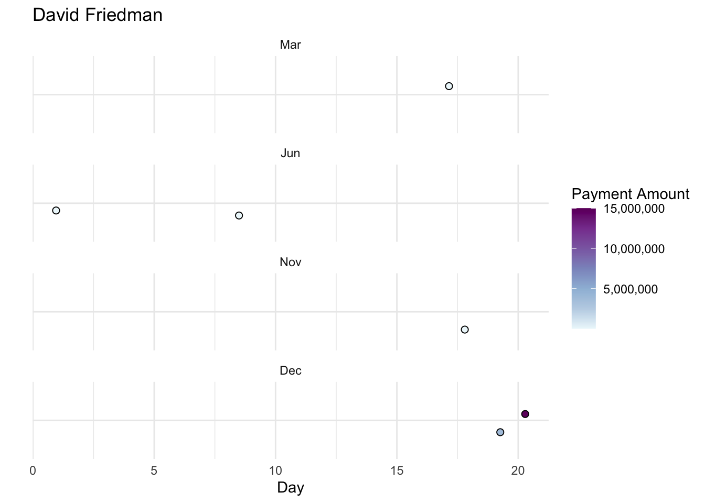
Write a function named payments_calendar. The function should:
- Take a
doctor_idanddoctor_nameas arguments - Filter
open_payments_cleanedto the doctor’s ID - Create payment calendar plot modeled after the one above
- Set the title of the plot to the doctor’s name
After you’ve written this function, use the map2() function to apply payments_calendar to each element in the top_10_doctors_ids vector and top_10_doctors_names vector.
# Write payments_calendar function here
payments_calendar <- function(doctor_id , doctor_name){
open_payments_cleaned |>
filter(covered_recipient_npi == {{doctor_id}}) |>
ggplot(aes(x = day(date_of_payment),
y = "",
fill = total_amount_of_payment_usdollars)) +
geom_jitter(pch = 21, size = 2, color = "black") +
theme_minimal() +
labs(title = doctor_name,
y = "",
x = "Day",
fill = "Payment Amount") +
scale_y_discrete(limits = rev) +
scale_fill_distiller(palette = "BuPu", direction = 1, labels = scales::comma) +
facet_wrap(~month(date_of_payment, label = TRUE), nrow = 4)
}
# Iterate payments_calendar over top_10_doctors_ids and top_10_doctors_ids to create 10 plots
map2(
.x = top_10_doctors_ids,
.y = top_10_doctors_names,
.f = payments_calendar
)[[1]]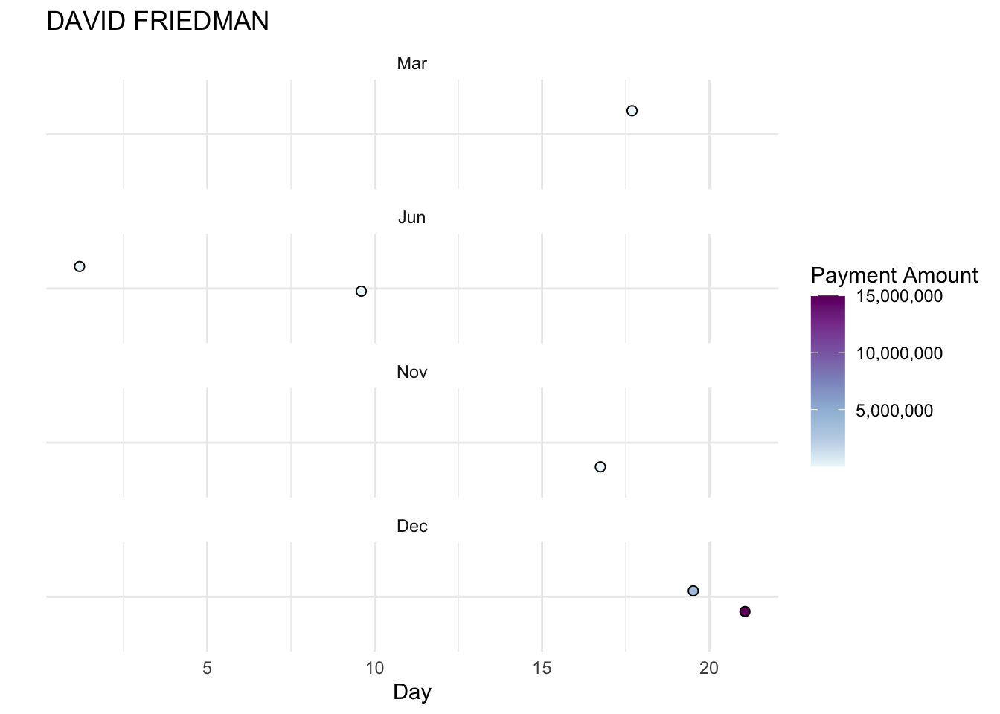
[[2]]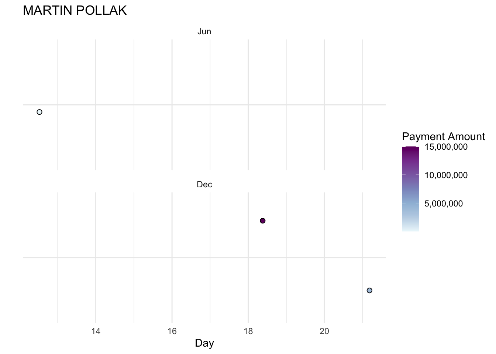
[[3]]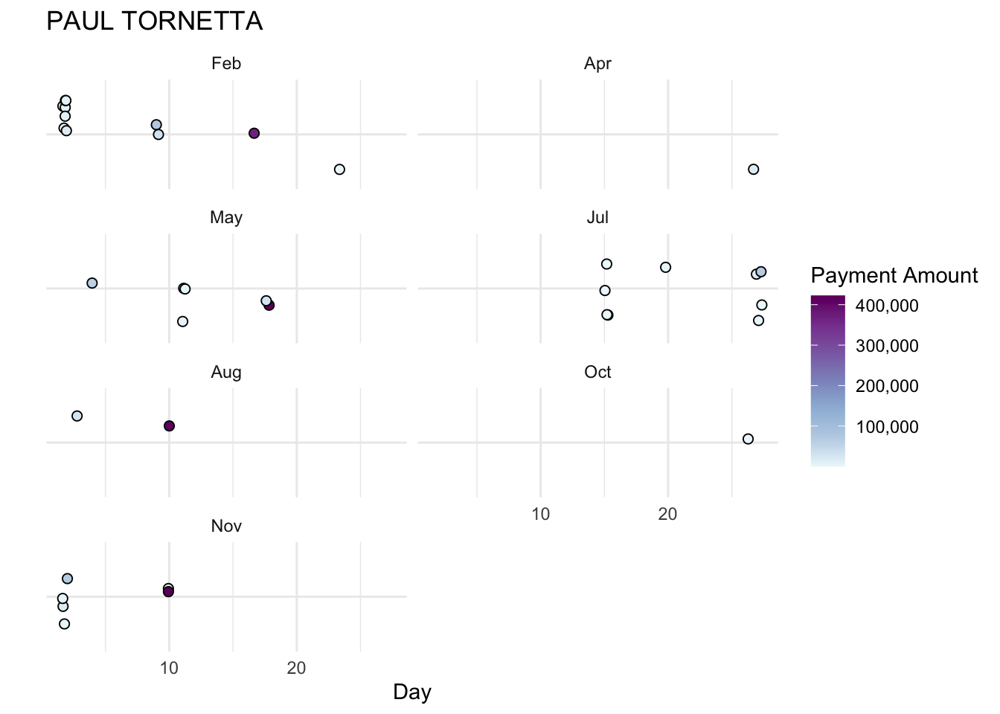
[[4]]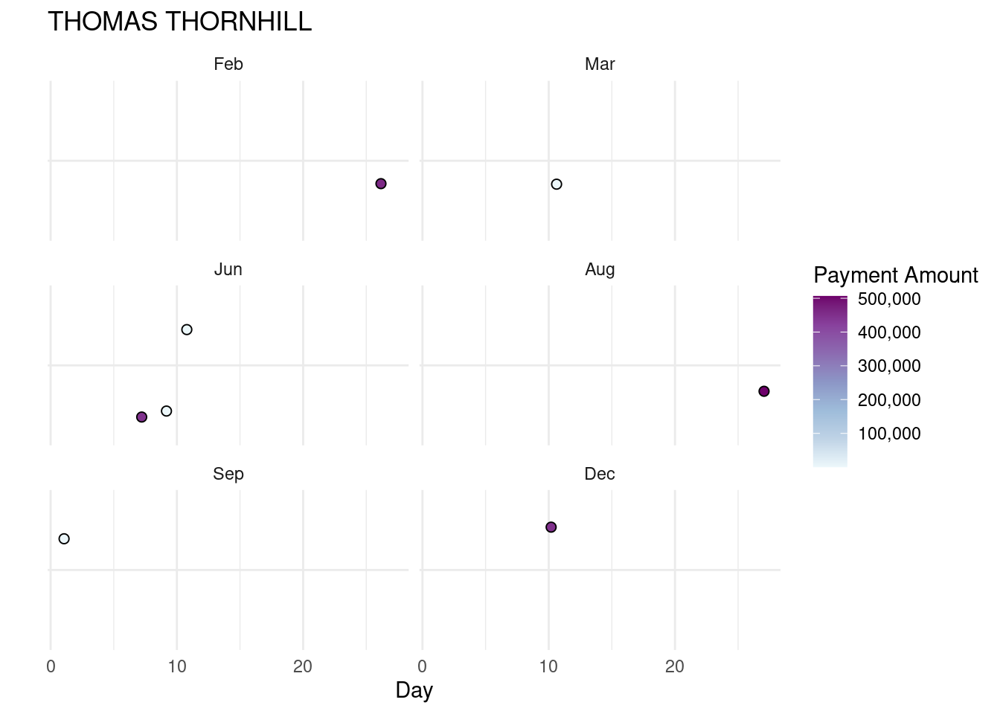
[[5]]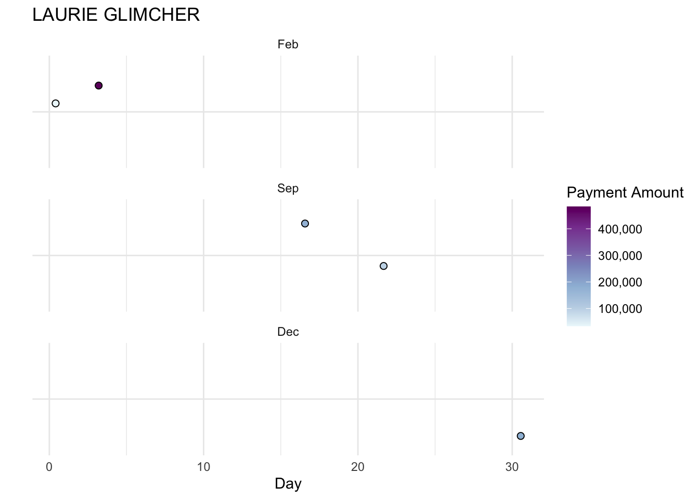
[[6]]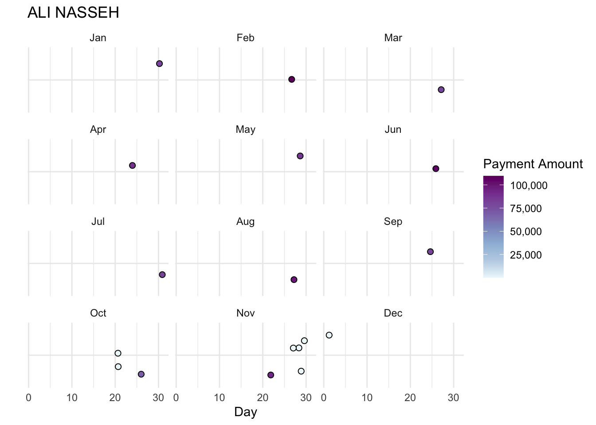
[[7]]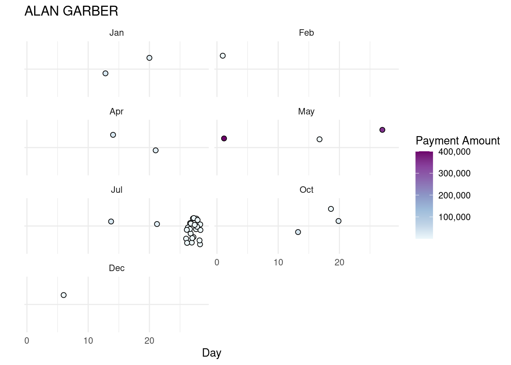
[[8]]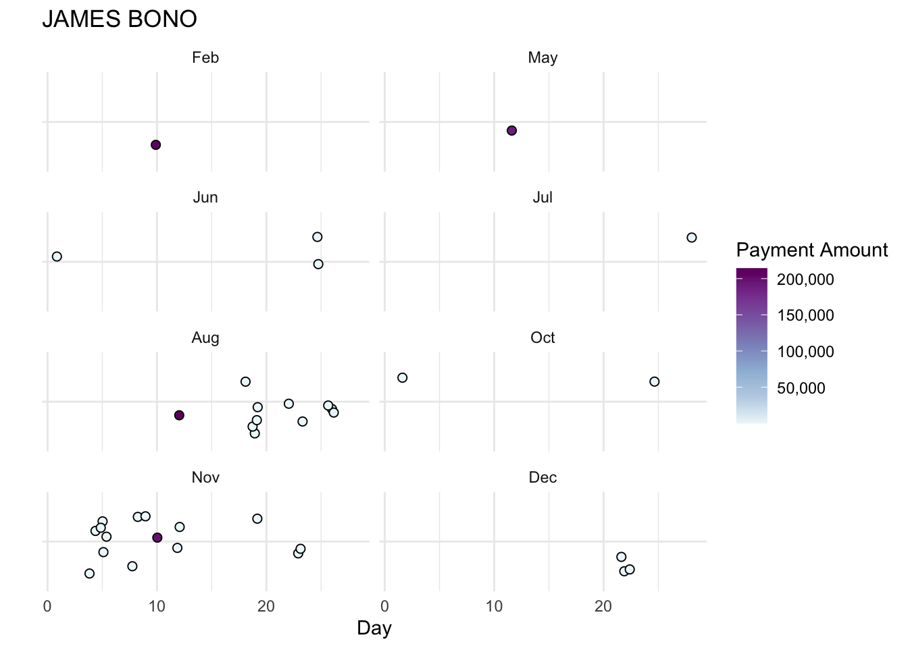
[[9]]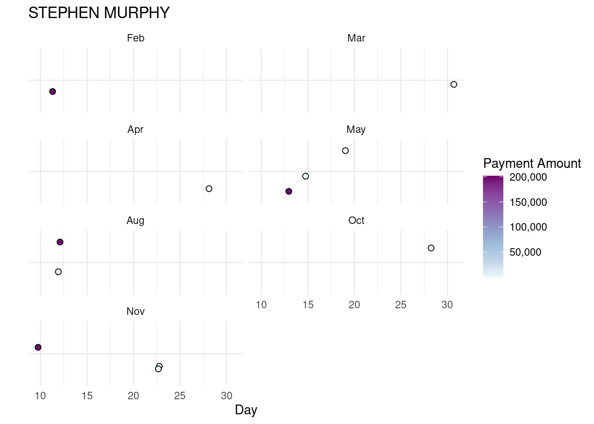
[[10]]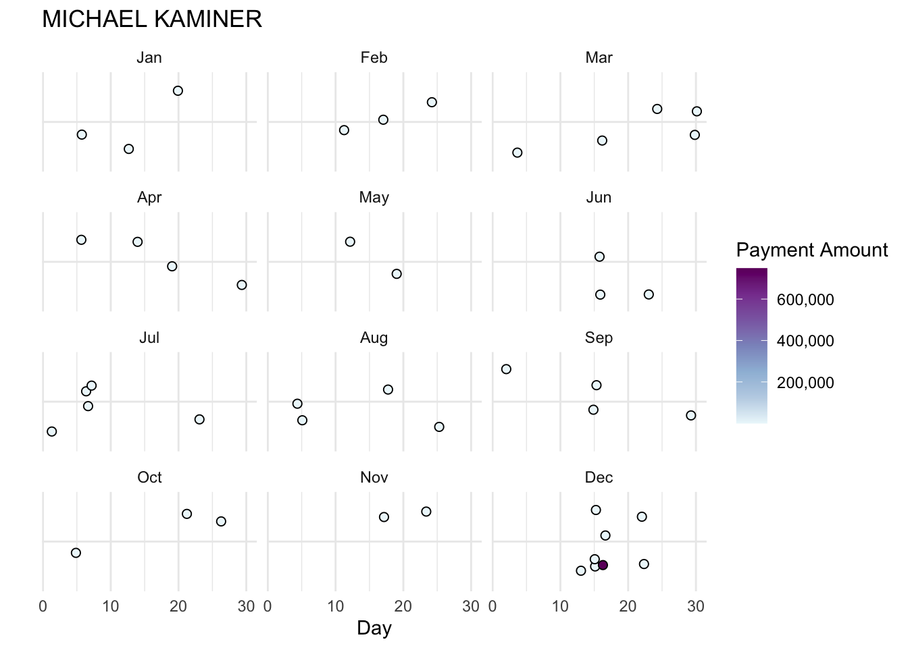
Ex 7: Which Manufacturers Paid MA-based Doctors in 2021, and through What Forms of Payment?
Finally, let’s define a function that filters open_payments_cleaned to a given doctor ID and determines how much the doctor received in compensation from different manufacturers, along with the forms of payment from each manufacturer. To do so, we will need to aggregate the data by covered_recipient_npi, applicable_manufacturer_or_applicable_gpo_making_payment_name, and form_of_payment_or_transfer_of_value and calculate the total payments associated with each grouping.
Write a function named calculate_manufacturer_payments. The function should:
- Take a
doctor_idas an argument - Filter
open_payments_cleanedto that ID - Aggregate the filtered data by
covered_recipient_npi,applicable_manufacturer_or_applicable_gpo_making_payment_name, andform_of_payment_or_transfer_of_value - Calculate the total amount of payments for each grouping
- Sort the resulting data frame in descending order by the total amount of payments
After you’ve written this function, use the map_df() function to apply calculate_manufacturer_payments to each element in the top_10_doctors_ids vector. Note how this returns one data frame rather than a list of 10 data frames.
Plot your resulting data frame as a column plot, attempting (to the best of your ability) to match the formatting of the plot below.
# Write calculate_manufacturer_payments function here
calculate_manufacturer_payments <- function(doctor_id){
open_payments_cleaned |>
filter(covered_recipient_npi == {{doctor_id}})|>
group_by(
covered_recipient_npi,
applicable_manufacturer_or_applicable_gpo_making_payment_name,
form_of_payment_or_transfer_of_value)|>
reframe(total = sum(total_amount_of_payment_usdollars))
}
# Iterate calculate_manufacturer_payments over top_10_doctors_ids here
df<- map_df(
.x = top_10_doctors_ids,
.f = calculate_manufacturer_payments
)
# Plot resulting data frame here
df |>
ggplot(aes(
x = applicable_manufacturer_or_applicable_gpo_making_payment_name,
y = total,
fill = form_of_payment_or_transfer_of_value)
) +
geom_col()+
facet_wrap(facets = ~covered_recipient_npi ,ncol = 2, scales = "free")+
coord_flip()+
theme_minimal()+
theme(text = element_text(size=5))+
scale_y_continuous(labels = scales::comma)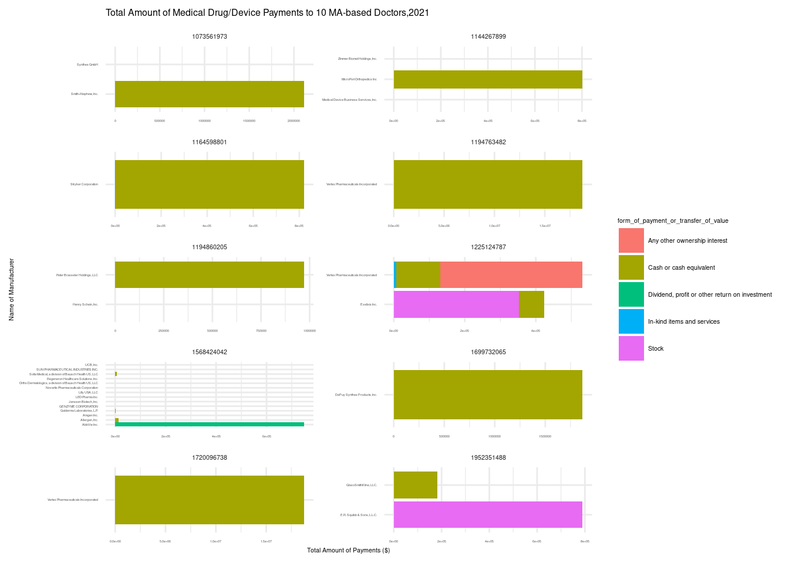
df# A tibble: 39 × 4
covered_recipient_npi applicable_manufacturer…¹ form_of_payment_or_t…² total
<dbl> <chr> <chr> <dbl>
1 1194763482 Vertex Pharmaceuticals I… Cash or cash equivale… 1.88e7
2 1720096738 Vertex Pharmaceuticals I… Cash or cash equivale… 1.88e7
3 1073561973 Smith+Nephew, Inc. Cash or cash equivale… 2.11e6
4 1073561973 Smith+Nephew, Inc. In-kind items and ser… 1.07e2
5 1073561973 Synthes GmbH Cash or cash equivale… 2.5 e2
6 1699732065 DePuy Synthes Products, … Cash or cash equivale… 1.87e6
7 1952351488 E.R. Squibb & Sons, L.L.… Stock 7.91e5
8 1952351488 GlaxoSmithKline, LLC. Cash or cash equivale… 1.81e5
9 1194860205 Henry Schein, Inc. In-kind items and ser… 2.88e2
10 1194860205 Peter Brasseler Holdings… Cash or cash equivale… 9.71e5
# ℹ 29 more rows
# ℹ abbreviated names:
# ¹applicable_manufacturer_or_applicable_gpo_making_payment_name,
# ²form_of_payment_or_transfer_of_value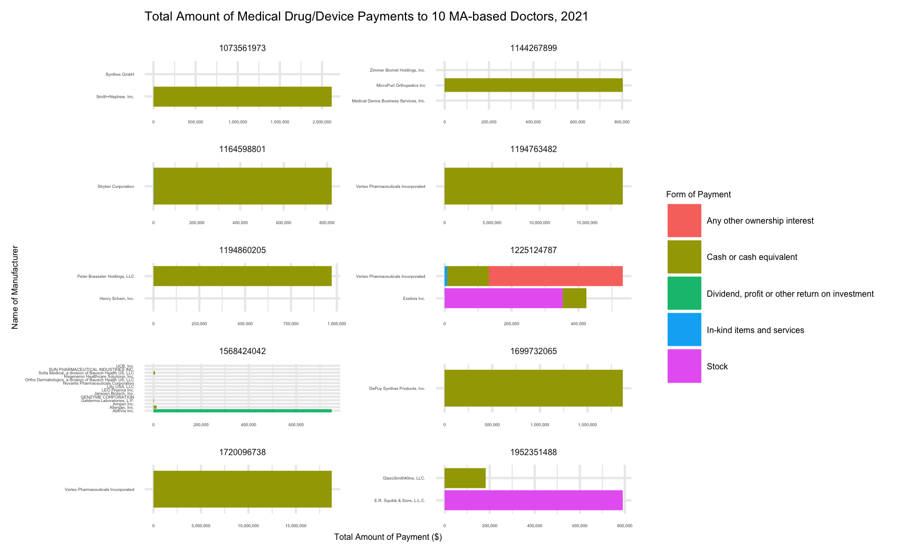